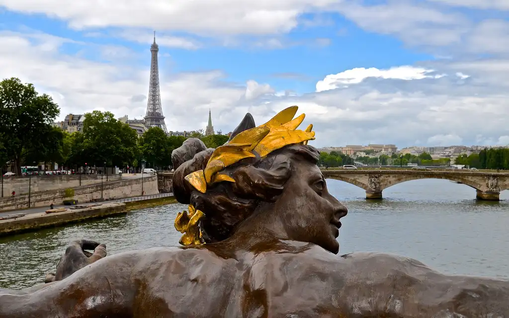
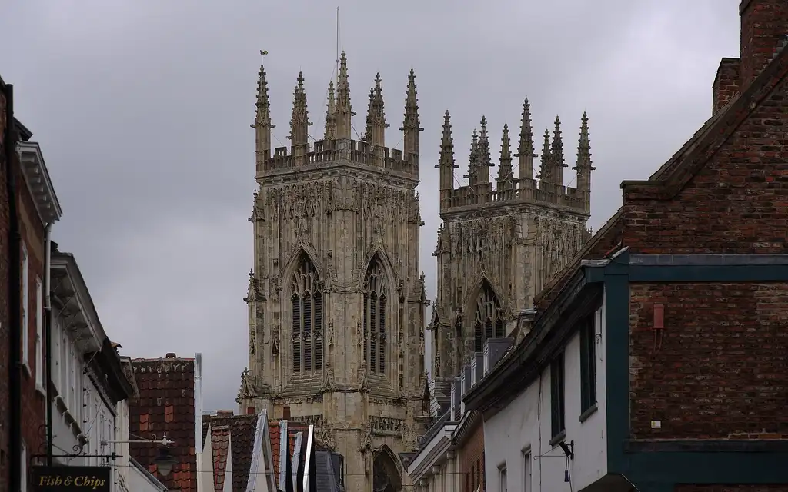
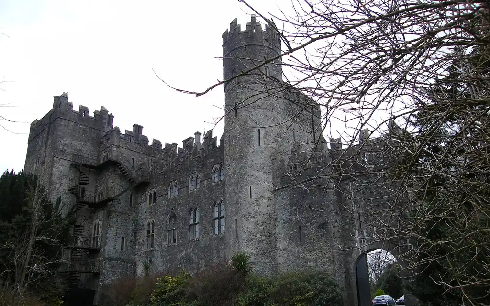

Kilkea Castle · stay
The long table in the old kitchen
ask for it; they'll say no twice and then light the fire.
The public face of the house. Curators share the places and moments they love, in their own voice, on a journal of their own. Travellers follow the curators whose taste they trust, find the places those curators have stamped, and, when a curator sells a voyage, buy a page in their passport. No venue pays for a stamp. Curators are the clients.
Nine screens, mobile first, with the home page at desktop width as well. The photographs of places are the licensed ones from The Green Road, credited at the bottom. Tiles marked "photo" stand in for a curator's own photographs of food and rooms, which the mockup does not have. Names of places and dishes are examples.
The first screen a stranger sees. No marketing hero, no feature list: the latest stamps, as photographs, with the curator's stamp on each one. The thesis is the content.


The same screen once the house knows who you follow and where you are. The ranking is explainable in one line under each block: from curators you follow, near you, new this week.

Tap any tile and the feed becomes vertical: one photograph per screen, swipe up for the next. This is the TikTok pace the brief asks for, without the noise. The curator gets one handwritten line. The house gets the facts in a small label.
Yelp's job with the opposite ranking. A place rises by who has stamped it, not by how many strangers rated it. Filters are occasions, not categories, because that is how people actually ask: date night, graduation dinner, family dinner, somewhere with a fire.
A place page is not a review page. It is a list of the people who love it and one line from each. The order to get. The facts. Two buttons.
A curator's page is their journal, the way a Substack writer has a publication. It holds four things: moments (photos), places (their stamps), letters (longer pieces), and packages (voyages they sell). Following is free. Supporting is paid, and unlocks letters and asking them directly.
A curator's itinerary is a story told in days, each with a photo strip and a few stops. It is the long form between a moment and a package. At the bottom, one button makes it yours: the house copies the stops into a new voyage, pencilled, in the template of your choice.
This is where the network pays. A curator sells a voyage: dates, places, a template, their narrator, some dinners already held, and a fixed number of pages. Buying one puts the page in your passport, in the curator's world, with the curator's stamp on it.
A question in plain words, answered from stamps. The house composes the answer and never pretends to have been there: every line is a curator's, attributed, in their hand. For a sharper answer, supporters can ask a curator directly.
Four columns of moments, the house line on the left, the curators on the right. Nothing on the desktop that is not on the phone; the desktop only has more room for photographs.
| Thing | Called | Not |
|---|---|---|
| A person who shares places | a curator | influencer, creator, publisher |
| Their page | their journal | profile, channel, newsletter |
| Recommending a place; keeping one | to stamp it | like, save, pin, review, rate |
| A photo with a line | a moment | post, story, reel |
| A longer piece | a letter | post, article, blog |
| A day-by-day plan | an itinerary | guide, listicle |
| A voyage for sale | a package, with pages | tour, trip, product, seats |
| Following; paying | follow; support | subscribe (free), subscribe (paid) |
| The question box | Ask | search, chat, assistant |